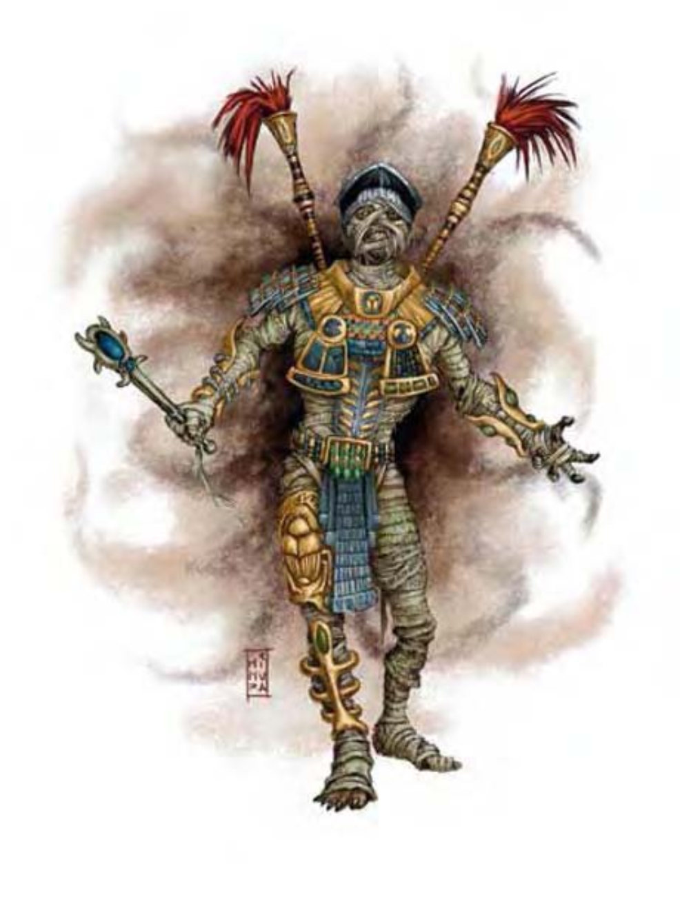

由特别强力或邪恶的尸体所活化而成的木乃伊，有时会变得更为强大。木乃伊王与木乃伊很像，但通常穿戴著生前装备――古老的青铜防具、刻有符文的剑或魔法手杖。
木乃伊王通常是高深的施法者。他们成为高级领主、祭司与巫师陵墓的守墓者，多半立誓永恒守护生前所效忠的对象。但有时形成木乃伊王的原因是因为恐怖的诅咒、仪式或对背叛、不忠或重罪的惩罚。这种木乃伊王通常会被禁锢于墓中，永世不得翻身。
| 资料栏位 | 木乃伊王、10级牧师 中型不死生物 |
| 生命骰 | 8d12+10d8 (97HP) |
| 先攻 | +5 |
| 速度 | 穿着半身铠甲时15英尺 (3格)；基本速度20英尺 |
| 防御等级 | 30 (+1敏捷、+10天生、+9 “+2半身铠甲”)、接触11、措手不及29 |
| 基本攻击/擒抱 | +11 / +19 |
| 攻击 | 挥击+20近战 (1d6+12 / 19-20附加腐尸症) |
| 全力攻击 | 挥击+20近战 (1d6+12 / 19-20附加腐尸症) |
| 占据/触及 | 5英尺 / 5英尺 |
| 特殊攻击 | 绝望、腐尸症、斥喝不死生物、法术 |
| 特殊能力 | 伤害减免5 / ―、黑暗视觉60英尺、火焰抗力10、不死特性、易受火焰伤害 |
| 豁免 | 强韧+13、反射+8、意志+20 |
| 属性 | 力量26、敏捷12、体质―、智力8、感知20、魅力17 |
| 技能 | 专注+8、宗教知识+4、聆听+18、潜行+5、侦察+18 |
| 专长 | 警觉、战斗施法、强韧加强、精通致命攻击 (挥击)、精通先攻、专攻武器 (挥击) |
| 环境 | 任何 |
| 组织 | 单独或守墓队 (1个木乃伊王和6-10个木乃伊) |
| 宝藏 | 标准，加上说明中列出的持有物 |
| 阵营 | 通常守序邪恶 |
| 进化 | 依人物职业而定 |
| 等级修正值 | ― |
绝望 (超自然)：对抗木乃伊王绝望的意志检定DC=17。
腐尸症 (超自然)：对抗木乃伊王腐尸症的意志检定DC=17。
一般已准备牧师法术：(6/7/6/5/5/4；豁免检定DC=15+法术等级)：
零级――“侦测魔法” (2)、“神导术”、“阅读魔法”、“提升抗力”、“恩赐”；
一级――“绝望术”、“命令术”、“观命术”、“神眷”、“丧志术”、“圣域术”、“虔诚护盾”；
二级――“蛮力术”、“死亡丧钟”*、“人类定身术”、“抵抗能量伤害”、“沉默术”、“灵能武器”；
三级――“操纵死尸”*、“深幽黑暗术”、“解除魔法”、“消除隐形”、“灼热光辉”；
四级――“凌空而行”、“驱逐术”、“神能”、“巨虫术”、“法术免疫”；
五级――“疫病虫群”*、“杀生术”*、“法术抗力”、“痛苦徽记”)。
*领域法术。领域：死亡与保护。
持有物：“+2半身铠甲”、“+2抗力斗篷”、次级抵抗火焰伤害戒指、护盾别针。(不同的木乃伊王其装备也不尽相同。)
| 对比项 | 木乃伊 | 木乃伊王 (10级牧师) |
|---|---|---|
| 生命骰 | 8d12+3 (55HP) | 8d12+10d8 (97HP) |
| 先攻 | +0 | +5 |
| 速度 | 20英尺 (4格) | 穿着半身铠时15英尺 (3格)；基本速度20英尺 |
| 防御等级 | 20 (+10天生)、接触10、措手不及20 | 30 (+1敏捷、+10天生、+9“+2半身铠甲”)、接触11、措手不及29 |
| 基本攻击/擒抱 | +4 / +11 | +11 / +19 |
| 攻击 | 挥击+11近战 (1d6+10附加腐尸症) | 挥击+20近战 (1d6+12 / 19-20附加腐尸症) |
| 全力攻击 | 挥击+11近战 (1d6+10附加腐尸症) | 挥击+20近战 (1d6+12 / 19-20附加腐尸症) |
| 特殊攻击 | 绝望、腐尸症 | 绝望、腐尸症、斥喝不死生物、法术 |
| 特殊能力 | 伤害减免5 / ―、黑暗视觉60英尺、不死特性、易受火焰伤害 | 伤害减免5 / ―、黑暗视觉60英尺、火焰抗力10、不死特性、易受火焰伤害 |
| 豁免 | 强韧+4、反射+2、意志+8 | 强韧+13、反射+8、意志+20 |
| 属性 | 力量24、敏捷10、体质―、智力6、感知14、魅力15 | 力量26、敏捷12、体质―、智力8、感知20、魅力17 |
| 技能 | 躲藏+7、聆听+8、潜行+7、侦察+8 | 专注+8、宗教知识+4、聆听+18、潜行+5、侦察+18 |
| 专长 | 警觉、强韧加强、健壮 | 警觉、战斗施法、强韧加强、精通致命攻击 (挥击)、精通先攻、专攻武器 (挥击) |
| 环境 | 任何 | 任何 |
| 组织 | 单独、看守队 (2-4) 或守卫队 (6-10) | 单独或守墓队 (1个木乃伊王和6-10个木乃伊) |
| 挑战级数 | 5 | 15 |
| 阵营 | 通常守序邪恶 | 通常守序邪恶 |